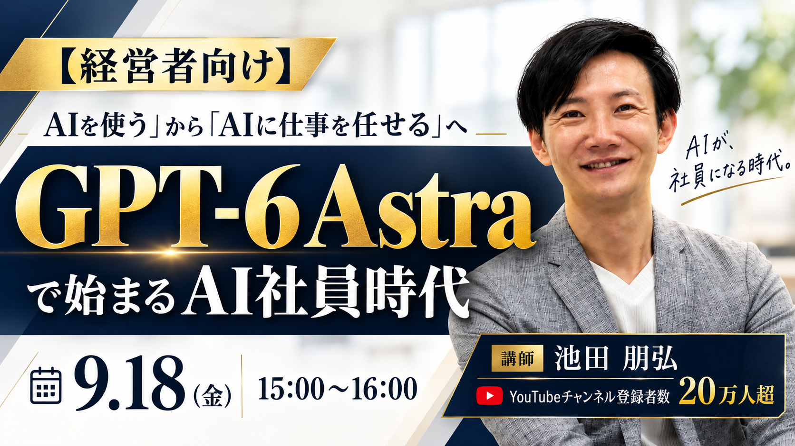

SPECIAL INVITATION / SEPTEMBER 18
「AIを使う」から「AIに仕事を任せる」へ
GPT-6 Astraで始まる、
AI社員時代。
GPT-6 Astraは、ブラウザや業務ソフトを操作し、仕事を成果物まで仕上げます。この60分では、任せどころを経営の視点から学び、後半は一緒に手を動かします。
無料で参加を申し込む↗一緒に操作する場合は、Astraを利用できる有料プランをご用意ください。
経営者向け講師：池田朋弘さん実践パートあり
SPECIAL INVITATION / 2026特別勉強会
ご案内をお届けした皆さまへ
特別勉強会
ご招待状
企業研修・コンサルティング依頼は通常100万円以上
その池田朋弘さんをお迎えし、“実務で本当に使えるAI活用”を学ぶ60分に、今回は無料でご招待します。
01ABOUT THIS HOUR
自社のどの仕事を、
AIに任せるか。
たとえば研修資料づくり。既存の形式に合わせて表を更新し、申込フォームを確認し、完成版を保存する。そんな一連の仕事を任せられるようになります。
経営者が決めるのは、何を任せ、どこで承認するか。自社の仕事を一つ選び、渡し方を具体的に考えます。
この60分で得られること
01AIに渡せる仕事と、渡せない仕事の見分け方
02任せる範囲・承認の線・取り消せる仕組み
03分析・実行・定型処理でのAIの振り分け方
04任せる範囲が広がったとき、経営者が最初に決めること
02SPEAKER
Amazonランキング1位著者・経営とAI導入の両方を知る講師
池田 朋弘さん
株式会社Workstyle Evolution 代表取締役
1984年生まれ。早稲田大学卒業。2013年の独立後、連続起業家として事業の立ち上げとM＆Aを経験。自ら事業をつくってきた経営者の視点で、AIエージェントの実務への導入を伝えています。
9社創業
4回M＆A（Exit）
100社以上導入支援・研修・助言
BOOKS & CHANNEL現場に届ける、
現場に届ける、
AIの仕事術。
企業への支援と並行して、著書やYouTubeでもAIエージェントの実務活用を伝えています。
著書『ChatGPT最強の仕事術』5.6万部
著書『Gemini 最強のAI仕事術』2.3万部
著書『Claude 最強のAI自動化術』2.2万部
ほか『AIの雇い方』など著書多数
YouTubeいけともch
AIエージェント時代の必須ノウハウを、ビジネスの視点から解説。
登録者20万人超（2026年3月時点）03JOIN THE WEBINAR
特別な60分を、
自社の次の一歩に。
- 日時
- 2026年9月18日（金）15:00〜16:00
- 形式
- オンライン・生配信
- 参加費
- 無料
- 実践参加
- 実践で一緒に操作する場合、Astraを利用できる有料プランが必要